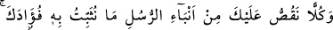
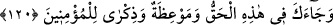

Mağribî (k.s.) de şöyle der:
Erbâb-ı hakîkatin bâtınında Hak’dan gayrı yoktur
Ehl-i hakîkatin hakîkatte cenneti budur
İşin hakîkatini ve bu sözün sırrını anladınsa himmetini bütün hâl ve makamlarla
ilgilenme libasından tecrid edip Allah Teâlâ’ya vâsıl ol ve O’nun katına eriş. En yüce
merâm O’dur.
120. Peygamberlerin haberlerinden senin kalbini (tatmin ve) teskin edeceğimiz
her haberi sana anlatıyoruz. Bunda sana hak, mü’minlere de bir öğüt ve bir uyarı
gelmiştir.
“Peygamberlerin haberlerinden” bir kısmını “senin kalbini teskin edeceğimiz”
kalbini pekiştirerek yakînini artıracak, gönlünü rahatlatacak ve sana yapılanların senden
öncekilere de yapılmış olduğunu bilmeni sağlayacak “her haberi sana anlatıyoruz.”
“Elle gelen düğün bayram” atasözünde de belirtildiği üzere, insanlar bir mihnet ve
belâya mâruz kaldıklarında bu belâlara başkalarının mâruz kaldığını da görünce
sıkıntıları hafifler.
Kâşânî (r.h.) Şerhu’t-Tâiyye’de şöyle der: “Kalbin Ruh’a dönük bir yüzü vardır ki
ona fuâd denir. Bu, “Fuâd gördüğünü yalanlamadı.” (en-Necm, 53/11) âyetinde
buyrulduğu gibi görme mahallidir. Kalbin bir de nefse dönük yüzü vardır ki ona da sadr
denir. Bu ise ilimlerin sûretlerinin bulunduğu yerdir. Arş şehâdet âlemindeki varlıkların
kalbi olduğu gibi kalb de gayb âleminde rûhun arşıdır.”
“Bunda” İbn Abbas (r.anhümâ)’nın Basra camiinin minberinde yaptığı tefsire göre -
ki çoğu müfessirler bu görüştedir- bu sûrede “sana hak,” yâni hakkın tâ kendisi ve
doğrunun beyânı, “mü’minlere de bir öğüt” büyük bir nasîhat “ve bir uyarı” hatırlatma
“gelmiştir.” Çünkü Allah Teâlâ’nın bahsettiği bu hâdiseler ile verdiği cezâlardan
çıkarılacak öğüt ve uyarılardan yararlanan sadece onlardır.
Bütün surelerde gelen haber ve prensipler iyice düşünülüp anlaşılması ve gereğince
amel edilmesi gereken gerçekler olduğu halde, bu surede getirilenlerin şerefini
göstermek ve mertebelerini yüceltmek için sadece bu surede getirilenler hak/gerçek
olarak bildirilmiştir.
el-İrşâd’da şöyle diyor: Yâni bu surede de sana kendisi zâten hak olma özelliği ile
inananlar için öğüt ve ibret alma özelliğini cem’eden bir şey geldi.